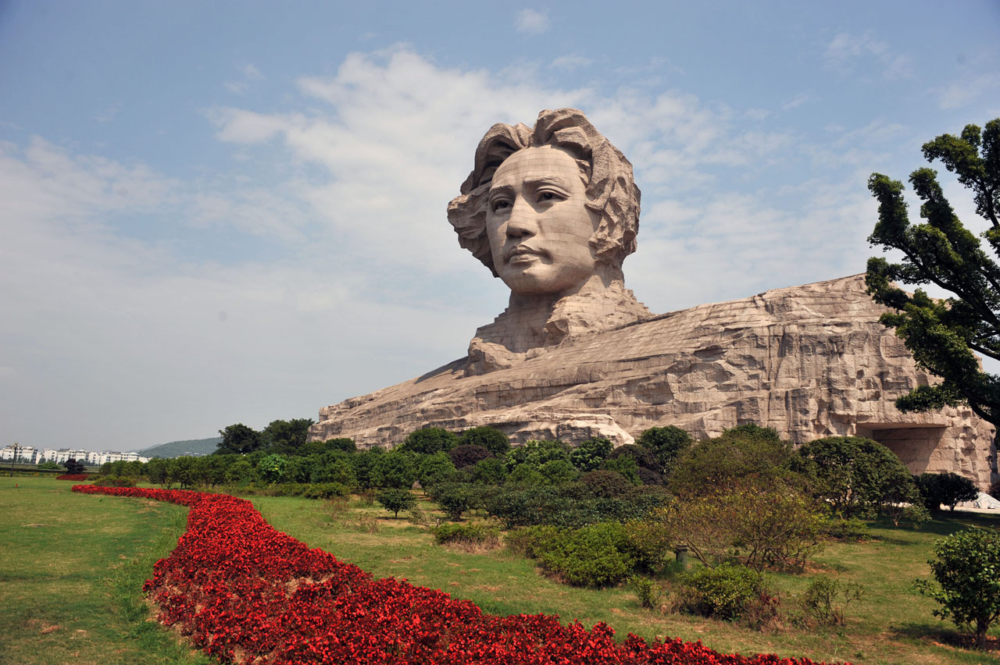
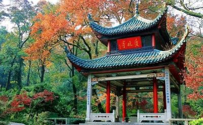

橘子洲头
门票：免费
很多人是为了橘子洲才来的长沙！
来橘子洲一定要和毛爷爷雕像合照！这才是有意义的！

岳麓山
岳麓山，因南北朝刘宋时期徐灵期在《南岳记》中记载“南岳周围八百里，回燕为首， 岳麓为足”而得名。古人将岳麓山列为南岳七十二峰之一，称为灵麓峰。
天心阁
每座城市都有它独特的印记，对于长沙而言，天心阁不仅是一座楼阁，更是一座古城长沙的地标，素有“潇湘古阁、秦汉名城”的赞誉。
太平街
太平街，是长沙古城保留完整的一条街巷，坐落于五一商圈的核心区域，有“千年太平街，一部长沙史”的美誉。 见证了千年沧桑，焕发出新的生机。